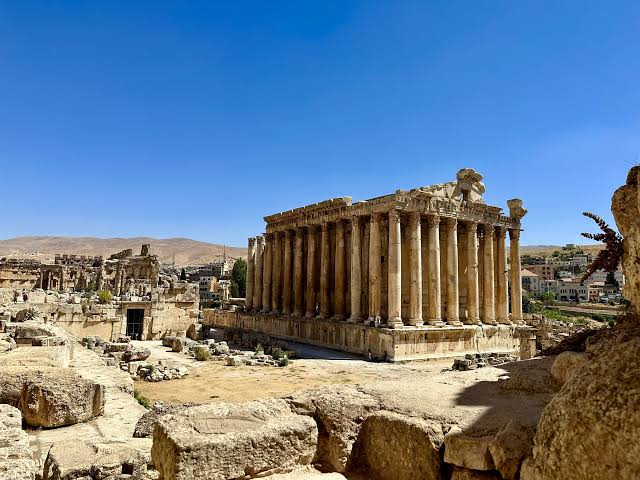
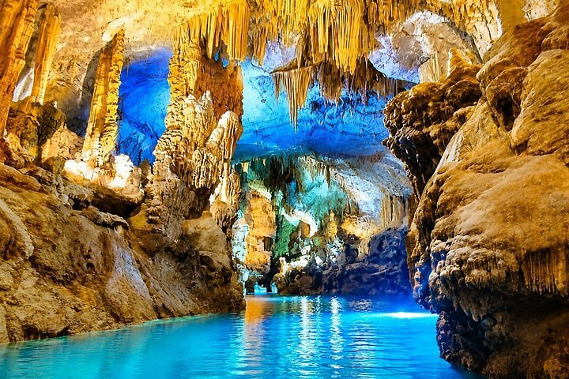
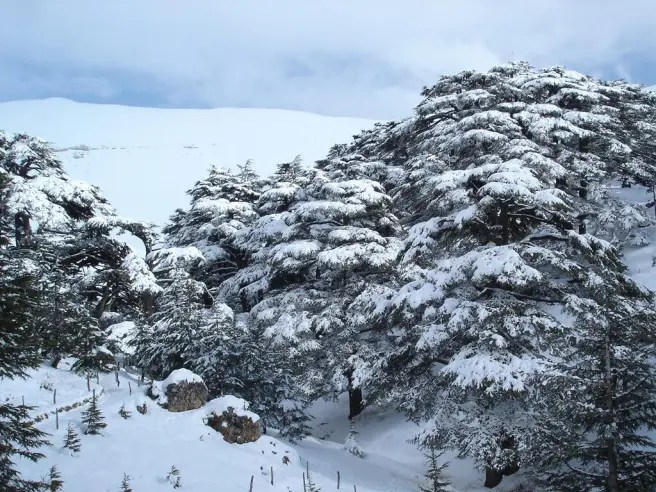
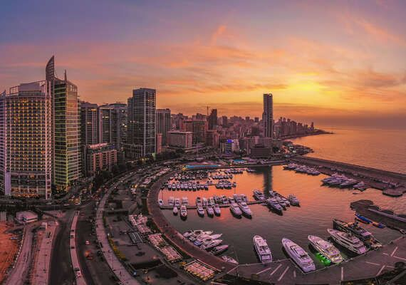
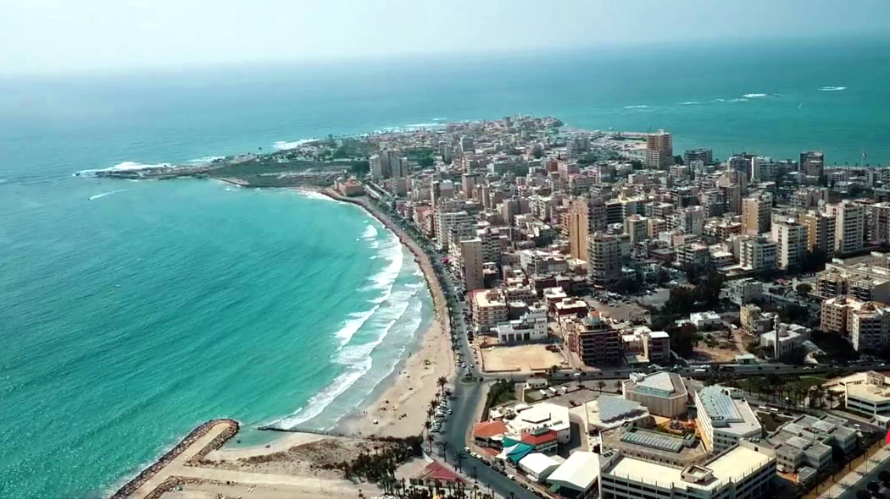

EXPLORE LEBANON
Where to Visit
Lebanon may be small, but it is filled with historical sites, natural wonders, beautiful cities, and breathtaking landscapes.
Baalbek
Famous for its enormous ancient Roman temples, Baalbek is one of Lebanon's most important archaeological sites.

Byblos
One of the world's oldest continuously inhabited cities, known for its ancient ruins and beautiful harbor.

Jeita Grotto
A spectacular cave system featuring impressive limestone formations and underground landscapes.

Cedars of God
A historic cedar forest representing one of Lebanon's most recognizable natural symbols.

Beirut
Lebanon's capital is known for its culture, history, restaurants, nightlife, and Mediterranean atmosphere.

Tyre
A historic coastal city famous for its archaeological sites, beaches, and ancient heritage.
